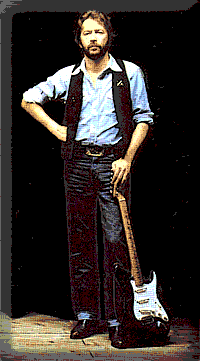
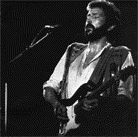

слушать
|
Японский блюз Эрика Клэптона: на чужой стороне, после долгого лечения...
Альбом представлен в серии "Золото блюзовой фонотеки". |
скачать

|
 Бурные споры о том, может ли Эрик Клэптон играть блюз - не утихают с 1963 года, когда Клэптон дебютировал на лондонской блюзовой сцене в составе группы "Ярдбердз". Казалось бы, за прошедшие-то годы одна из противоположных точек зрения должна была бы победить. Ан нет - спор идет все с прежним накалом, в него включаются новые поколения, внося в вечно тлеющий диспут новую порцию горячности.
Включение в цикл "Золото блюзовой фонотеки" альбома Клэптона 1980 года "JUST ONE NIGHT" вовсе не означает намерения поставить точку в споре трех с половиной десятилетий. Спор будет продолжаться до тех пор, пока жив хоть один ревнитель "чистого", ну, т.е., "черного блюза". И если кого-то интересует именно личная моя точка зрения: по-моему, Клэптон блюз то играет, то не играет. И кажется мне, именно в этом - ключ к долголетию дискуссии. Но, когда "да" а когда - "нет", - вопрос не голосования большинством, а личных пристрастий.
На протяжении всей долгой карьеры Эрика Клэптона редкий его альбом обходился без хотя бы одного блюза, или чего-то похожего на блюз. Есть в его дискографии альбомы, которые, может быть, в целом имеют и большее право именоваться блюзовыми, нежели "JUST ONE NIGHT". Но ни один из них не содержит блюзового шедевра, подобного "Double Trouble". - может быть, именно это исполнение не дает противникам Клэптона-блюзмэна одержать окончательную победу в споре. Одна эта запись может служить доказательством существования британского блюза как класса.

|
{kind=link}